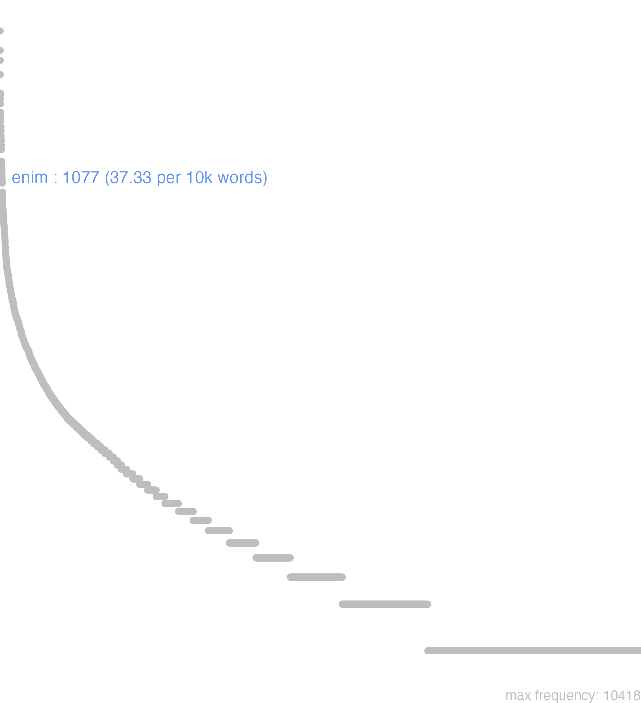

49 enim
49.0.0.1 bases lexicais
id: http://lila-erc.eu/data/id/lemma/101119
classe: advérbio
paradigma: indeclinável
outras grafias:
variantes do lema:
no data
ĕnim
no data
49.0.0.2 dicionários tradicionais
enim
part. afirm.
Obs.: Partícula afirmativa, geralmente colocada depois da primeira palavra principal da frase. Como conjunção pode exprimir uma confirmação Cíc. Tusc. 1, 11; ou a causa Cíc. Phil. 2, 32.
part. afirm.
Obs.: Partícula afirmativa, geralmente colocada depois da primeira palavra principal da frase. Como conjunção pode exprimir uma confirmação Cíc. Tusc. 1, 11; ou a causa Cíc. Phil. 2, 32.
1 I-Sent. próprio Na verdade, de fato, seguramente, realmente Verg. G. 2, 104.
2 I-Donde Com efeito Plaut. As. 808.
no data
Enim
conjunc.
conjunc.
1 Cic. porque.
2 Caes. porém.
3 Cic. Ter. na verdade, certamente.
Enim
1. b.
1. b.
1 porque, ou certamente Conjunct. pospositiva; conjuncta cum Verò praeponitur
[EXEMPLOS]
1
enimuero na verdade
Enim
coniunctio.
coniunctio.
1 porque
49.0.0.3 dados de corpus
![This chart plots collocate by scoreSUBST, for the headword enim here are all the values plotted: collocate: neque; scoreSUBST: 0. collocate: quis; scoreSUBST: 0. collocate: sum; scoreSUBST: 0. collocate: non; scoreSUBST: 0. collocate: iam; scoreSUBST: 0. collocate: sic; scoreSUBST: 0. collocate: hic; scoreSUBST: 0. collocate: nec; scoreSUBST: 0. collocate: nullus; scoreSUBST: 0. collocate: nihil; scoreSUBST: 0. collocate: ego; scoreSUBST: 0. collocate: ipse; scoreSUBST: 0. collocate: at; scoreSUBST: 0. collocate: dico; scoreSUBST: 0. collocate: ille; scoreSUBST: 0. collocate: multus; scoreSUBST: 0. collocate: uideo; scoreSUBST: 0. collocate: possum; scoreSUBST: 0. collocate: scio; scoreSUBST: 0. collocate: numquam; scoreSUBST: 0. collocate: iste; scoreSUBST: 0. collocate: saepe; scoreSUBST: 0. collocate: nemo; scoreSUBST: 0. collocate: tam; scoreSUBST: 0. collocate: quisque; scoreSUBST: 0. collocate: ita; scoreSUBST: 0. collocate: nosco; scoreSUBST: 0. collocate: umquam; scoreSUBST: 0. collocate: credo; scoreSUBST: 0. collocate: quisquam; scoreSUBST: 0. collocate: refert; scoreSUBST: 0. collocate: quando; scoreSUBST: 0. collocate: demum; scoreSUBST: 0. collocate: uereor; scoreSUBST: 0. collocate: ualde; scoreSUBST: 0. collocate: aperte; scoreSUBST: 0. collocate: aliter; scoreSUBST: 0. collocate: cottidie; scoreSUBST: 0. collocate: quamuis; scoreSUBST: 0. collocate: difficilis; scoreSUBST: 0. collocate: nondum; scoreSUBST: 0. collocate: perspicio; scoreSUBST: 0. collocate: dubito; scoreSUBST: 0](./Media/wordcloud__xx101-110-105-109xx__BY_collocate_scoreSUBST.webp)
![This chart plots collocate by scoreADJ, for the headword enim here are all the values plotted: collocate: neque; scoreADJ: 0. collocate: quis; scoreADJ: 0. collocate: sum; scoreADJ: 0. collocate: non; scoreADJ: 0. collocate: iam; scoreADJ: 0. collocate: sic; scoreADJ: 0. collocate: hic; scoreADJ: 0. collocate: nec; scoreADJ: 0. collocate: nullus; scoreADJ: 0. collocate: nihil; scoreADJ: 0. collocate: ego; scoreADJ: 0. collocate: ipse; scoreADJ: 0. collocate: at; scoreADJ: 0. collocate: dico; scoreADJ: 0. collocate: ille; scoreADJ: 0. collocate: multus; scoreADJ: 0. collocate: uideo; scoreADJ: 0. collocate: possum; scoreADJ: 0. collocate: scio; scoreADJ: 0. collocate: numquam; scoreADJ: 0. collocate: iste; scoreADJ: 0. collocate: saepe; scoreADJ: 0. collocate: nemo; scoreADJ: 0. collocate: tam; scoreADJ: 0. collocate: quisque; scoreADJ: 0. collocate: ita; scoreADJ: 0. collocate: nosco; scoreADJ: 0. collocate: umquam; scoreADJ: 0. collocate: credo; scoreADJ: 0. collocate: quisquam; scoreADJ: 0. collocate: refert; scoreADJ: 0. collocate: quando; scoreADJ: 0. collocate: demum; scoreADJ: 0. collocate: uereor; scoreADJ: 0. collocate: ualde; scoreADJ: 0. collocate: aperte; scoreADJ: 0. collocate: aliter; scoreADJ: 0. collocate: cottidie; scoreADJ: 0. collocate: quamuis; scoreADJ: 0. collocate: difficilis; scoreADJ: 2. collocate: nondum; scoreADJ: 0. collocate: perspicio; scoreADJ: 0. collocate: dubito; scoreADJ: 0](./Media/wordcloud__xx101-110-105-109xx__BY_collocate_scoreADJ.webp)
![This chart plots collocate by scoreVERBO, for the headword enim here are all the values plotted: collocate: neque; scoreVERBO: 0. collocate: quis; scoreVERBO: 0. collocate: sum; scoreVERBO: 4. collocate: non; scoreVERBO: 0. collocate: iam; scoreVERBO: 0. collocate: sic; scoreVERBO: 0. collocate: hic; scoreVERBO: 0. collocate: nec; scoreVERBO: 0. collocate: nullus; scoreVERBO: 0. collocate: nihil; scoreVERBO: 0. collocate: ego; scoreVERBO: 0. collocate: ipse; scoreVERBO: 0. collocate: at; scoreVERBO: 0. collocate: dico; scoreVERBO: 2. collocate: ille; scoreVERBO: 0. collocate: multus; scoreVERBO: 0. collocate: uideo; scoreVERBO: 2. collocate: possum; scoreVERBO: 1. collocate: scio; scoreVERBO: 2. collocate: numquam; scoreVERBO: 0. collocate: iste; scoreVERBO: 0. collocate: saepe; scoreVERBO: 0. collocate: nemo; scoreVERBO: 0. collocate: tam; scoreVERBO: 0. collocate: quisque; scoreVERBO: 0. collocate: ita; scoreVERBO: 0. collocate: nosco; scoreVERBO: 2. collocate: umquam; scoreVERBO: 0. collocate: credo; scoreVERBO: 2. collocate: quisquam; scoreVERBO: 0. collocate: refert; scoreVERBO: 2. collocate: quando; scoreVERBO: 0. collocate: demum; scoreVERBO: 0. collocate: uereor; scoreVERBO: 2. collocate: ualde; scoreVERBO: 0. collocate: aperte; scoreVERBO: 0. collocate: aliter; scoreVERBO: 0. collocate: cottidie; scoreVERBO: 0. collocate: quamuis; scoreVERBO: 0. collocate: difficilis; scoreVERBO: 0. collocate: nondum; scoreVERBO: 0. collocate: perspicio; scoreVERBO: 2. collocate: dubito; scoreVERBO: 2](./Media/wordcloud__xx101-110-105-109xx__BY_collocate_scoreVERBO.webp)
![This chart plots collocate by scoreADV, for the headword enim here are all the values plotted: collocate: neque; scoreADV: 0. collocate: quis; scoreADV: 0. collocate: sum; scoreADV: 0. collocate: non; scoreADV: 3. collocate: iam; scoreADV: 2. collocate: sic; scoreADV: 2. collocate: hic; scoreADV: 0. collocate: nec; scoreADV: 0. collocate: nullus; scoreADV: 0. collocate: nihil; scoreADV: 0. collocate: ego; scoreADV: 0. collocate: ipse; scoreADV: 0. collocate: at; scoreADV: 0. collocate: dico; scoreADV: 0. collocate: ille; scoreADV: 0. collocate: multus; scoreADV: 0. collocate: uideo; scoreADV: 0. collocate: possum; scoreADV: 0. collocate: scio; scoreADV: 0. collocate: numquam; scoreADV: 2. collocate: iste; scoreADV: 0. collocate: saepe; scoreADV: 2. collocate: nemo; scoreADV: 0. collocate: tam; scoreADV: 2. collocate: quisque; scoreADV: 0. collocate: ita; scoreADV: 1. collocate: nosco; scoreADV: 0. collocate: umquam; scoreADV: 2. collocate: credo; scoreADV: 0. collocate: quisquam; scoreADV: 0. collocate: refert; scoreADV: 0. collocate: quando; scoreADV: 2. collocate: demum; scoreADV: 2. collocate: uereor; scoreADV: 0. collocate: ualde; scoreADV: 2. collocate: aperte; scoreADV: 2. collocate: aliter; scoreADV: 2. collocate: cottidie; scoreADV: 2. collocate: quamuis; scoreADV: 2. collocate: difficilis; scoreADV: 0. collocate: nondum; scoreADV: 2. collocate: perspicio; scoreADV: 0. collocate: dubito; scoreADV: 0](./Media/wordcloud__xx101-110-105-109xx__BY_collocate_scoreADV.webp)
![This chart plots collocate by scoreFUNC, for the headword enim here are all the values plotted: collocate: neque; scoreFUNC: 0. collocate: quis; scoreFUNC: 0. collocate: sum; scoreFUNC: 0. collocate: non; scoreFUNC: 0. collocate: iam; scoreFUNC: 0. collocate: sic; scoreFUNC: 0. collocate: hic; scoreFUNC: 0. collocate: nec; scoreFUNC: 0. collocate: nullus; scoreFUNC: 0. collocate: nihil; scoreFUNC: 0. collocate: ego; scoreFUNC: 0. collocate: ipse; scoreFUNC: 0. collocate: at; scoreFUNC: 0. collocate: dico; scoreFUNC: 0. collocate: ille; scoreFUNC: 0. collocate: multus; scoreFUNC: 0. collocate: uideo; scoreFUNC: 0. collocate: possum; scoreFUNC: 0. collocate: scio; scoreFUNC: 0. collocate: numquam; scoreFUNC: 0. collocate: iste; scoreFUNC: 0. collocate: saepe; scoreFUNC: 0. collocate: nemo; scoreFUNC: 0. collocate: tam; scoreFUNC: 0. collocate: quisque; scoreFUNC: 0. collocate: ita; scoreFUNC: 0. collocate: nosco; scoreFUNC: 0. collocate: umquam; scoreFUNC: 0. collocate: credo; scoreFUNC: 0. collocate: quisquam; scoreFUNC: 0. collocate: refert; scoreFUNC: 0. collocate: quando; scoreFUNC: 0. collocate: demum; scoreFUNC: 0. collocate: uereor; scoreFUNC: 0. collocate: ualde; scoreFUNC: 0. collocate: aperte; scoreFUNC: 0. collocate: aliter; scoreFUNC: 0. collocate: cottidie; scoreFUNC: 0. collocate: quamuis; scoreFUNC: 0. collocate: difficilis; scoreFUNC: 0. collocate: nondum; scoreFUNC: 0. collocate: perspicio; scoreFUNC: 0. collocate: dubito; scoreFUNC: 0](./Media/wordcloud__xx101-110-105-109xx__BY_collocate_scoreFUNC.webp)
![This charts plots the frequency of lemma by author_Frequencies. The Hieronymus subcorpus registers the highest normalized frequency, with the value of 65.15 and an absolute frequency of 29. The Cicero subcorpus follows, with a normalized frequency of 51.95 and an absolute frequency of 834. the subcorpus with the least normalized frequency is Sallustius with the normalized value of 2.78 and an absolute freqeuncy of 3. here are all the values: subcorpus: Caesar ; normalized frequency: 13 ; absolute frequency: 4.90973638492333. subcorpus: Cicero ; normalized frequency: 834 ; absolute frequency: 51.9548478732152. subcorpus: Horatius ; normalized frequency: 4 ; absolute frequency: 3.55208240831187. subcorpus: Ovidius ; normalized frequency: 4 ; absolute frequency: 6.86341798215511. subcorpus: Phaedrus ; normalized frequency: 3 ; absolute frequency: 4.5544253833308. subcorpus: Sallustius ; normalized frequency: 3 ; absolute frequency: 2.78267322140803. subcorpus: Seneca ; normalized frequency: 179 ; absolute frequency: 33.4073645508669. subcorpus: Suetonius ; normalized frequency: 1 ; absolute frequency: 11.0253583241455. subcorpus: Tacitus ; normalized frequency: 3 ; absolute frequency: 10.2986611740474. subcorpus: Vergilius ; normalized frequency: 4 ; absolute frequency: 7.72200772200772. subcorpus: Hieronymus ; normalized frequency: 29 ; absolute frequency: 65.1538980004493](./Media/barchart__xx101-110-105-109xx__lemma_BY_author_Frequencies.webp)
![This charts plots the frequency of lemma by genre_Frequencies. The Prosa.ficcional subcorpus registers the highest normalized frequency, with the value of 65.15 and an absolute frequency of 29. The Prosa.filosófica subcorpus follows, with a normalized frequency of 59.64 and an absolute frequency of 362. the subcorpus with the least normalized frequency is Poesia.trágica with the normalized value of 0 and an absolute freqeuncy of 0. here are all the values: subcorpus: Prosa.histórica ; normalized frequency: 20 ; absolute frequency: 4.86866768908688. subcorpus: Prosa.filosófica ; normalized frequency: 362 ; absolute frequency: 59.6365792985289. subcorpus: Prosa.oratória ; normalized frequency: 487 ; absolute frequency: 46.7581346672683. subcorpus: Prosa.epistolográfica ; normalized frequency: 164 ; absolute frequency: 43.4563713929887. subcorpus: Poesia.lírica ; normalized frequency: 4 ; absolute frequency: 3.36502061075124. subcorpus: Poesia.didática ; normalized frequency: 7 ; absolute frequency: 5.93773856985325. subcorpus: Poesia.trágica ; normalized frequency: 0 ; absolute frequency: 0. subcorpus: Poesia.épica ; normalized frequency: 4 ; absolute frequency: 7.72200772200772. subcorpus: Prosa.ficcional ; normalized frequency: 29 ; absolute frequency: 65.1538980004493](./Media/barchart__xx101-110-105-109xx__lemma_BY_genre_Frequencies.webp)
![This charts plots the frequency of lemma by period_Frequencies. The IV.d.C. subcorpus registers the highest normalized frequency, with the value of 65.15 and an absolute frequency of 29. The I.a.C. subcorpus follows, with a normalized frequency of 39.93 and an absolute frequency of 858. the subcorpus with the least normalized frequency is II.d.C. with the normalized value of 10.47 and an absolute freqeuncy of 4. here are all the values: subcorpus: I.a.C. ; normalized frequency: 858 ; absolute frequency: 39.9348382592506. subcorpus: I.d.C. ; normalized frequency: 186 ; absolute frequency: 28.4534189995411. subcorpus: II.d.C. ; normalized frequency: 4 ; absolute frequency: 10.4712041884817. subcorpus: IV.d.C. ; normalized frequency: 29 ; absolute frequency: 65.1538980004493](./Media/barchart__xx101-110-105-109xx__lemma_BY_period_Frequencies.webp)
vides enim cetera
Cic.Att.2.3.2
tu vês o restante. [JDD]
nosti enim Marianas
Cic.Att.1.16.10
(Pois conheces as de Mário) [JDD]
ita enim plerique iudicant
Sen.Ep.33.2
Pois a maioria assim julga. [JDD]
sic enim est obiectum
Cic.Cael.57
Pois assim lhe foi imputado. [JDD, de outra edição]
ego enim idem sum
Cic.Att.3.5
pois eu continuo igual. [JDD]
nondum enim in negotio versaris
Cic.Att.5.10.3
Pois ainda não estás exercendo o negócio”. [JDD, de outra edição]
duo enim soli dicuntur petituri
Cic.Att.1.17.11
Com efeito, dizem que só dois vão se candidatar. [JDD]
valde enim exspecto tuas litteras
Cic.Att.2.5.3
Pois espero muito as tuas cartas. [JDD]
nobis enim scribuntur saepe maiora
Cic.Att.5.8.3
pois me são escritas muitas vezes coisas exageradas. [JDD]
lege enim collegi sui non tenebantur
Cic.Att.3.23.4
pois eles não estavam submetidos a uma lei de seu colégio. [JDD]
in me enim ipsum peccavi vehementius
Cic.Att.3.15.4
pois contra mim próprio cometi faltas mais graves. [JDD]
sic enim nostrae rationes utilitatis meae postulabant
Cic.Att.4.2.6
pois era assim que pediam as razões de meu interesse. [JDD]
hoc enim ipsum philosophiae seruire libertas est
Sen.Ep.8.7
pois ser escravo da filosofia é precisamente a liberdade. [JDD]
maxima est enim uis uetustatis et consuetudinis
Cic.Amici.68
pois é muito grande a força da antiguidade e do costume. [JDD]
hanc enim habebat semper in ore prouinciam
Cic.Phil.3.26.8
Pois sempre tinha em sua boca esta província. [JDD]
dixit enim parem esse horis nec mentitur
Sen.Ep.12.7
Pois disse que era igual em horas e não está mentindo. [JDD]
pronuntiare enim solitum esse et non dare
Cic.Att.1.16.13
pois costumava prometer e não dar. [JDD]
isto enim nomine illa adhuc causa caruit
Cic.Lig.17
Pois tal causa não teve até agora esse nome. [JDD]
non enim dicentur tantum illa sed probabuntur
Sen.Ep.20.9
pois aquelas coisas não só serão ditas, mas serão provadas.” [JDD]
si enim nemo impediet sic est firmius
Cic.Att.3.15.5
Pois se ninguém se opuser, o que há de mais seguro? [JDD, de outra edição]
habes crimina insidiarum nihil enim dixit amplius
Cic.Deiot.21
Aí tens a acusação da emboscada, pois não disse mais nada. [JDD]
armis enim gesta numquam profecto in iudicium uocabuntur
Cic.Phil.1.21.6
Pois as coisas feitas pelas armas nunca, sem dúvida, serão chamadas em juízo. [JDD]
prima enim quaeque placuisset si omnem tuam crederes
Sen.Ep.28.5
pois a primeira teria te agradado, se acreditasses toda tua. [JDD]
aliter enim cum tyranno aliter cum amico uiuitur
Cic.Amici.89
pois de um modo se vive com um tirano, de outro, com um amigo. [JDD]
iam enim charta ipsa ne nos prodat pertimesco
Cic.Att.2.20.3
pois já tenho muito medo de que o próprio papel nos traia. [JDD]
negant enim quemquam esse uirum bonum nisi sapientem
Cic.Amici.18
pois dizem que nenhum homem é bom, a não ser o sábio. [JDD]
statui enim nihil iam de re publica cogitare
Cic.Att.2.4.4
pois decidi não pensar mais nada acerca da república. [JDD]
neque enim licuit aliter uestro generi nomini familiae disciplinae
Cic.Lig.20
pois não foi permitida outra coisa à vossa linhagem, nome, família, princípios. [JDD]
at enim in praeturae petitione prior renuntiatus est Seruius
Cic.Mur.35
“Sim, mas na candidatura a pretor Sérvio foi proclamado em primeiro”. [JDD]
utebamur enim illis non quia debebamus sed quia habebamus
Sen.Ep.123.6
pois as usávamos não porque devíamos, mas porque as tínhamos. [JDD]
in oppidis enim summum video timorem sed multa inania
Cic.Att.5.3.1
pois vejo nas cidades um enorme temor, mas muitas coisas vagas. [JDD]
multos enim eius praeclaros de re publica sermones accipiam
Cic.Att.5.6.1
pois ouvirei muitas falas brilhantes dele sobre a república. [JDD]
at enim liberum senatus iudicium propter metum non fuit
Cic.Dom.10
10 Mas, de fato, o julgamento do senado não foi livre, por causa do medo. [JDD]
si enim illim emerserit nullius supplici crudelitas erit recusanda
Cic.Phil.4.12.4
Pois se sair dali, a crueldade de nenhum suplício deverá ser descartada. [JDD, de outra edição]
vereor enim ne dum defendam meos non parcam tuis
Cic.Att.1.17.3
pois receio que, defendendo os meus, eu não poupe os teus. [JDD]
nec enim secerni a fratre poterit tanta praesertim auctoritate
Cic.Phil.6.10.6
Pois não será possível separá-lo do irmão, especialmente com tão grande autoridade deste. [JDD]
cognoscite Quirites non enim hoc sine causa quaeri uidetur
Cic.Man.22
Ficai sabendo, Quirites; pois isso não parece ser perguntado sem motivo. [JDD]
utrumque enim uitium est et omnibus credere et nulli
Sen.Ep.3.4
pois ambas são vícios, tanto confiar em todos como em ninguém. [JDD]
est enim commune cum multis et cum quibusdam bonis
Cic.Cael.14
Pois ela é comum a muitos e a alguns bons. [JDD]
si enim es Romae iam me adsequi non potes
Cic.Att.3.5
Pois se estás em Roma, já não podes me alcançar. [JDD]
nec enim melior uir fuit Africano quisquam nec clarior
Cic.Amici.6
pois não houve nenhum homem melhor que o Africano nem mais ilustre. [JDD]
cotidie enim magis suspicor te in Epirum iam profectum
Cic.Att.5.7.1
pois cotidianamente eu tenho mais suspeita de que tu já partiste para o Epiro. [JDD, de outra edição]
putamus enim utile esse te aliquando iam rem transigere
Cic.Att.1.4.1
pois consideramos ser útil que tu dês um fim de uma vez a esse assunto. [JDD]
sciunt enim ipsos omnia habere communia et quidem magis aduersa
Sen.Ep.6.3
Porque sabem que eles têm todas as coisas em comum, e mais ainda as adversas. [JDD]
Herodes enim metuebat Iohannem sciens eum virum iustum et sanctum
Vulg.Marc.6.20
Pois Herodes temia João, sabendo ser ele um homem justo e santo. [JDD]
pater enim fuit equestri loco auus nulla inlustri laude celebratus
Cic.Mur.16
Pois teu pai foi da ordem equestre, teu avô não se tornou célebre por nenhuma ilustre distinção. [JDD]
non est enim in rebus uitium sed in ipso animo
Sen.Ep.17.12
pois o vício não está nas coisas, mas no próprio espírito. [JDD]
at ne Bruto quidem id enim fortasse quispiam improbus dixerit
Cic.Phil.10.12.1
Mas Bruto também não; pois talvez algum descarado dirá isto. [JDD]
si enim deferetur erit quaedam nostra potestas et tum deliberabimus
Cic.Att.2.5.1
Pois se me for oferecido, terei um certo poder e então vou deliberar. [JDD]
uirtute enim ipsa non tam multi praediti esse quam uideri uolunt
Cic.Amici.98
Pois muitos querem não tanto estar dotados da própria virtude quanto parecê-lo. [JDD]
49.0.0.4 Diagrama de Zipf
